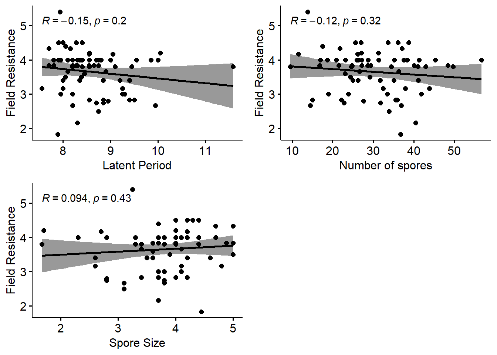

EDA dashboard
Obj 1 Data dashboard for resistant vs susceptible (in the field)
Turned out the NA is due to
1. Non-measured field resistance in the poplars from national collection.
2. Non-active infection in certain controls.
# Resistant poplars in the field: Assigning -5 to NA to avoid confusion in R
wild_yr2000_clean[is.na(wild_yr2000_clean)] = -5
# Add a new variable: resistant vs susceptible
# Loop, -5 = resistant, != -5 susceptible
wild_yr2000_clean[,8] = "NA"
names(wild_yr2000_clean)[8] = "Res_vs_sus_note"
for (i in c(1:nrow(wild_yr2000_clean))) {
if(wild_yr2000_clean$Notemax.2010[i] == -5)
wild_yr2000_clean[i,8] = "Resistant"
if(wild_yr2000_clean$Notemax.2010[i] != -5)
wild_yr2000_clean[i,8] = "Susceptible"
}
# Plotting resistant vs susceptible poplars in terms of field resistance
(resist_field = ggplot(wild_yr2000_clean, aes(x = Res_vs_sus_note)) +
geom_bar(aes(fill = Res_vs_sus_note)) +
geom_text(stat = "count", aes(label = ..count..), vjust = -0.5) +
labs(title = "Resistant vs susceptible poplars",
x = "Resistant vs Susceptibe",
y = "Counts") +
scale_fill_manual(values = c("#87CEEB", "#FF6A6A"),
breaks = c("Resistant", "Susceptible"),
name = "Resistant vs Susceptible",
labels = c("Resistant", "Susceptible")) +
theme_classic() +
theme(axis.title.x = element_blank()))
# Checking the population of origin of the resistant poplars
pop = plyr::count(wild_yr2000_clean$Population[
which(wild_yr2000_clean$Notemax.2010 == -5)
])
names(pop)[1] = "Population"
clone = plyr::count(wild_yr2000_clean$Clone[
which(wild_yr2000_clean$Notemax.2010 == -5)
])
names(clone)[1] = "Clone"
pop$Clone = paste(clone$Clone)
pop## Population freq Clone
## 1 St_Genix_sur_Guiers 1 71072-501It seems that there is only one poplar (71072-501) from St Genix that is resistant in the field.
Let’s see the resistant poplars in terms of lab resistance Those with latence = 14 and taille = -5
# Add a new variable: resistant vs susceptible (lab)
# Loop, -5 = resistant, != -5 susceptible
wild_yr2000_clean[,9] = "NA"
names(wild_yr2000_clean)[9] = "Res_vs_sus_lab"
for (i in c(1:nrow(wild_yr2000_clean))) {
if(wild_yr2000_clean$taille.93JE3.2010[i] == -5
& wild_yr2000_clean$latence.93JE3.2010[i] == 14)
wild_yr2000_clean[i,9] = "Resistant"
if(wild_yr2000_clean$taille.93JE3.2010[i] != -5
& wild_yr2000_clean$latence.93JE3.2010[i] != 14)
wild_yr2000_clean[i,9] = "Susceptible"
}
# Plotting resistant vs susceptible poplars in terms of lab resistance
(resist_lab = ggplot(wild_yr2000_clean, aes(x = Res_vs_sus_lab)) +
geom_bar(aes(fill = Res_vs_sus_lab)) +
geom_text(stat = "count", aes(label = ..count..), vjust = -0.5) +
labs(title = "Resistant vs susceptible poplars",
x = "Resistant vs Susceptibe",
y = "Counts") +
scale_fill_manual(values = c("#458B74", "#EE3B3B"),
breaks = c("Resistant", "Susceptible"),
name = "Resistant vs Susceptible",
labels = c("Resistant", "Susceptible")) +
theme_classic() +
theme(axis.title.x = element_blank()))
# Checking the population of origin of the resistant poplars (lab)
pop2 = plyr::count(wild_yr2000_clean$Population[
which(wild_yr2000_clean$Res_vs_sus_lab == "Resistant")
])
names(pop2)[1] = "Population"
clone2 = plyr::count(wild_yr2000_clean$Clone[
which(wild_yr2000_clean$Res_vs_sus_lab == "Resistant")
])
names(clone2)[1] = "Clone"
pop2$Clone = paste(clone2$Clone)
pop2## Population freq Clone
## 1 Nohèdes 1 NOH-25Seems that there are different poplars that are resistant in field and in the lab.
Obj 2 Average resistance. Data dashboard for summary statistics
# Field resistance (notemax)
# Removing -5 because they're outliers
wild_yr2000_new = wild_yr2000_clean[which(wild_yr2000_clean$Notemax.2010 != -5 &
wild_yr2000_clean$taille.93JE3.2010 != -5), ]
summary(wild_yr2000_new)## Classe Population Clone Notemax.2010 latence.93JE3.2010 nbsores.93JE3.2010
## coll. Nationale: 0 Nohèdes :13 6-J05 : 1 Min. :1.833 Min. : 7.550 Min. : 9.556
## nigrapop :64 Ramières :10 6-J13 : 1 1st Qu.:3.167 1st Qu.: 8.100 1st Qu.:24.275
## parent 14x13 : 8 ValAllier :10 6-J15 : 1 Median :3.833 Median : 8.425 Median :28.950
## témoin : 0 Gave-Mauleon: 6 71041-3-402: 1 Mean :3.654 Mean : 8.601 Mean :30.168
## Baudreix : 4 71077-2-308: 1 3rd Qu.:4.000 3rd Qu.: 8.912 3rd Qu.:36.825
## Sauveterre : 4 92510-1 : 1 Max. :5.400 Max. :11.583 Max. :56.700
## (Other) :25 (Other) :66
## taille.93JE3.2010 Res_vs_sus_note Res_vs_sus_lab
## Min. :1.667 Length:72 Length:72
## 1st Qu.:3.575 Class :character Class :character
## Median :3.800 Mode :character Mode :character
## Mean :3.787
## 3rd Qu.:4.200
## Max. :5.000
## NM = ggplot(wild_yr2000_new, aes(x = Notemax.2010)) +
geom_histogram(binwidth = 0.5) +
geom_density(aes(y = 0.3 * ..count..)) +
geom_vline(aes(xintercept = mean(Notemax.2010), color = "Mean"), size = 1) +
geom_vline(aes(xintercept = median(Notemax.2010), color = "Median"), size = 1) +
geom_vline(aes(xintercept = quantile(Notemax.2010, prob = 0.25), color = "Q1"),
size = 1) +
geom_vline(aes(xintercept = quantile(Notemax.2010, prob = 0.75), color = "Q3"),
size = 1) +
labs(title = "Field resistance",
caption = "number of samples = 72, sd = 0.63",
x = "Score",
y = "Counts") +
scale_color_manual(name = "Statistics", values = c(Mean = "red", Median = "orange", Q1 = "blue",
Q3 = "blue")) +
xlim(1, 6) +
ylim(0, 40)
# Latent period (latence)
LP = ggplot(wild_yr2000_new, aes(x = latence.93JE3.2010)) +
geom_histogram(binwidth = 0.5) +
geom_density(aes(y = 0.3 * ..count..)) +
geom_vline(aes(xintercept = mean(latence.93JE3.2010), color = "Mean"), size = 1) +
geom_vline(aes(xintercept = median(latence.93JE3.2010), color = "Median"), size = 1) +
geom_vline(aes(xintercept = quantile(latence.93JE3.2010, prob = 0.25), color = "Q1"),
size = 1) +
geom_vline(aes(xintercept = quantile(latence.93JE3.2010, prob = 0.75), color = "Q3"),
size = 1) +
labs(title = "Latent period",
caption = "sd = 0.69",
x = "Days",
y = "Counts") +
scale_color_manual(name = "Statistics", values = c(Mean = "red", Median = "orange", Q1 = "blue",
Q3 = "blue")) +
xlim(7, 12) +
ylim(0, 40)
# sd(wild_yr2000_new$latence.93JE3.2010)
# Number of spores
NS = ggplot(wild_yr2000_new, aes(x = nbsores.93JE3.2010)) +
geom_histogram(binwidth = 1.0) +
geom_density(aes(y = 0.3 * ..count..)) +
geom_vline(aes(xintercept = mean(nbsores.93JE3.2010), color = "Mean"), size = 1) +
geom_vline(aes(xintercept = median(nbsores.93JE3.2010), color = "Median"), size = 1) +
geom_vline(aes(xintercept = quantile(nbsores.93JE3.2010, prob = 0.25), color = "Q1"),
size = 1) +
geom_vline(aes(xintercept = quantile(nbsores.93JE3.2010, prob = 0.75), color = "Q3"),
size = 1) +
labs(title = "Number of spores",
caption = "sd = 9.49",
x = "Number (counts)",
y = "Counts") +
scale_color_manual(name = "Statistics", values = c(Mean = "red", Median = "orange", Q1 = "blue",
Q3 = "blue")) +
xlim(0, 60) +
ylim(0, 40)
# sd(wild_yr2000_new$nbsores.93JE3.2010)
# Spore size
SS = ggplot(wild_yr2000_new, aes(x = taille.93JE3.2010)) +
geom_histogram(binwidth = 0.5) +
geom_density(aes(y = 0.3 * ..count..)) +
geom_vline(aes(xintercept = mean(taille.93JE3.2010), color = "Mean"), size = 1) +
geom_vline(aes(xintercept = median(taille.93JE3.2010), color = "Median"), size = 1) +
geom_vline(aes(xintercept = quantile(taille.93JE3.2010, prob = 0.25), color = "Q1"),
size = 1) +
geom_vline(aes(xintercept = quantile(taille.93JE3.2010, prob = 0.75), color = "Q3"),
size = 1) +
labs(title = "Spore size",
caption = "sd = 0.68",
x = "Score",
y = "Counts") +
scale_color_manual(name = "Statistics", values = c(Mean = "red", Median = "orange", Q1 = "blue",
Q3 = "blue")) +
xlim(1, 5) +
ylim(0, 40)
# sd(wild_yr2000_new$taille.93JE3.2010)
# Combining the plots
dist = ggpubr::ggarrange(NM, LP, NS, SS)
dist
Field resistance
Seems that the poplars are in intermediate resistance, on average. For a note, field resistance is measured using scoring system from 1 - 6; score 1 means that infection covers only a small area of leaves, score 6 means that infection covers almost all area of poplar leaves. In other words, when field resistance score is 1 then the poplar is resistant, when field resistance score is 6 then the poplar is susceptible.In the field, the score is a little bit more than 3, which means that the infection moderately covers poplar’s leaf area. This being said that the poplars are either resistant or susceptible in the field.
Lab resistance, parameter: latent period
On average, poplars started showing the first infection (or symptoms) on day 8.5 after inoculation. Day 8.5 means that the infection starts on day 8 after midday. Seems that the poplars can inhibit the colonization of the pathogen until day 8, on average.Lab resistance, parameter: number of spores
Poplar individuals show a variable number of spores. Because of this, there are not many individuals that have similar number of spores (see the Y-axis scale). It seems that there are 2 peaks in the distribution, showing the segregation between indivdiuals. This is the indication that the population is made of 2 groups of populations. On average, the poplars are colonized by 30 spores (max = 56 spores) even though there are not so many poplars colonized by 30 spores. There are more poplars colonized by either 25 or 36 spores, indicating that the poplars may be moderately resistant.Lab resistance, parameter: size of spores
On average, the size of spores is scored closer to 4 than to 3. It shows that the poplars cannot inhibit the development of the pathogen’s spore once the spores colonize the poplars. It shows that the poplars are rather susceptible for this type of pathogen (code: rust 93JE3)Overall
The poplars are closer to being susceptible than to being resistant in the lab for this particular type of pathogen (code: rust 93JE3). Despite being able to inhibit the colonization of pathogen’s spores on the leaves, the poplars couldn’t inhibit the growth of pathogen’s spores at the end. While it is good to inhibit the number of spore colonization, it is more important to inhibit the growth of spore so that the spore do not cover the leaves. This is because if the poplars allow the spore to cover the leaf area, the poplars are at risk to reduced growth due to inefficient photosynthesize.
Obj 3 Correlation between field resistance and lab resistance
To observe the relationships between the parameters of resistance. Furthermore, to see if field resistance can be explained by the parameters of lab resistance or not.
LP_NM = ggpubr::ggscatter(wild_yr2000_new,
x = "latence.93JE3.2010", y = "Notemax.2010",
add = "reg.line", conf.int = TRUE,
cor.coef = TRUE, cor.method = "pearson",
xlab = "Latent Period", ylab = "Field Resistance")
NS_NM = ggpubr::ggscatter(wild_yr2000_new,
x = "nbsores.93JE3.2010", y = "Notemax.2010",
add = "reg.line", conf.int = TRUE,
cor.coef = TRUE, cor.method = "pearson",
xlab = "Number of spores", ylab = "Field Resistance")
SS_NM = ggpubr::ggscatter(wild_yr2000_new,
x = "taille.93JE3.2010", y = "Notemax.2010",
add = "reg.line", conf.int = TRUE,
cor.coef = TRUE, cor.method = "pearson",
xlab = "Spore Size", ylab = "Field Resistance")
corr = ggpubr::ggarrange(LP_NM, NS_NM, SS_NM)
corr
It seems that there are no clear correlation between field and lab resistance. It seems unclear whether lab resistance can explain or predict field resistance.
Obj 4 Correlation between parameters of lab resistance
# Designing the main correlation plot latence x taille
(main_cor = ggpubr::ggscatter(wild_yr2000_new,
x = "latence.93JE3.2010", y = "taille.93JE3.2010",
add = "reg.line", conf.int = TRUE,
color = "Classe", palette = "jco",
shape = "Classe", size = 2,
alpha = 0.6, ggtheme = theme_bw(),
xlab = "Latent period (days)",
ylab = "Spore size (score)") +
stat_cor(aes(color = Classe))) # correlation line
# Because I differentiated correlation for parent and nigrapop, I want to provide
# the density histogram for poplars from parent and nigrapop
# Density histogram for latent period, plotted at x axis
xdens = axis_canvas(main_cor, axis = "x") + # create the canvas base
geom_density(data = wild_yr2000_new,
aes(x = latence.93JE3.2010, fill = Classe),
alpha = 0.7, size = 0.2) + # density histogram for latence
ggpubr::fill_palette("jco") # color palette for fill
# Density histogram for taille, plotted at y axis
ydens = axis_canvas(main_cor, axis = "y", coord_flip = TRUE) +
geom_density(data = wild_yr2000_new,
aes(x = taille.93JE3.2010, fill = Classe),
alpha = 0.7, size = 0.2) + # density histogram for taille
coord_flip() + # flipping the coordinate, 90 degrees
ggpubr::fill_palette("jco")
# Adding xdens on the x axis of correlation plot
main_cor1 = cowplot::insert_xaxis_grob(main_cor, xdens,
grid::unit(0.2, "null"),
position = "top")
# Adding ydens on the y axis of correlation plot
main_cor2 = cowplot::insert_yaxis_grob(main_cor1, ydens,
grid::unit(0.2, "null"),
position = "right")
cowplot::ggdraw(main_cor2)
# Saving the plot
ggsave("correlation_plot.png",
device = "png",
width = 15,
height = 10,
units = "cm",
dpi = 300)It seems that there is a clear correlation between the parameters of lab resistance (latent period and spore size).